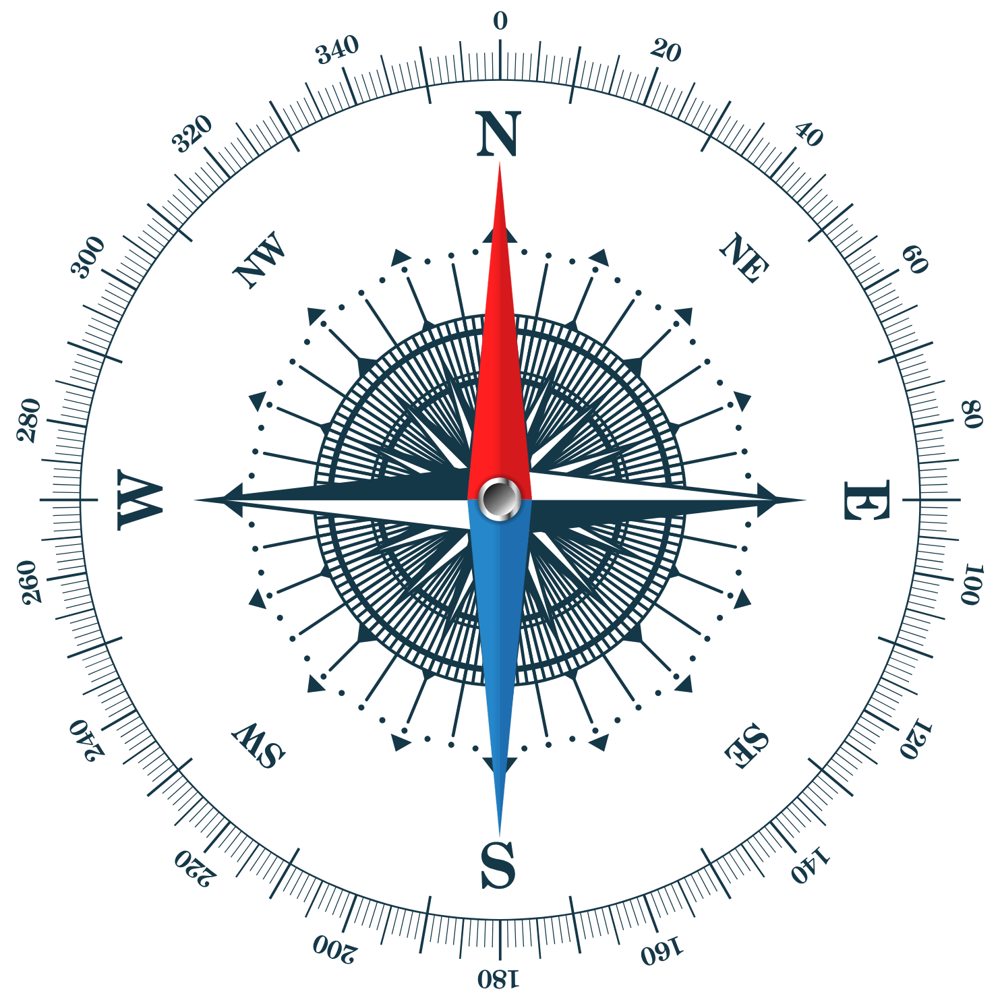

Supervision Éolienne
Se Connecter
Synoptique
Affichage des états en temps réel.
Vitesse du vent :
0
km/h
Direction du vent :
0
°
Boussole
Orientation actuelle du vent :

Données en temps réel
Accéder à la Base de Données